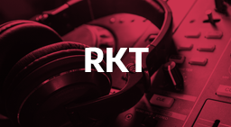

¡El 100% de nuestro tiempo y dedicación para tu proyecto!
¿Buscás un sonido propio?
Hay que entender que hay una gran diferencia entre hacer un beat adecuado a tus necesidades y largar beats genéricos como panes solo con el fin de vender.
Lo que te brindamos es un servicio completamente personalizado, para que tanto tu lírica como el instrumental estén en sintonía con esa idea dando vueltas en tu cabeza.
¡Te puedo brindar estos servicios!
PRODUCCIÓN MUSICAL
Te aconsejo, guío y acompaño durante todo el proceso.Desde la lírica hasta los instrumentos a conveniencia del género.
Tú ocúpate de tu idea y ProdByBarcelo se ocupará de darle cuerpo y solidez.
MEZCLA
La mezcla es el inicio del proceso de postproducción.Una vez que hayas escrito, grabado y producido tu música,llega el momento de la mezcla.
Un ingeniero de mezclas se encarga de equilibrar las distintas pistas de la sesión para que suenen agradables y cohesionadas cuando se reproducen juntas.
Te invito a escuchar nuestros
-

-
-